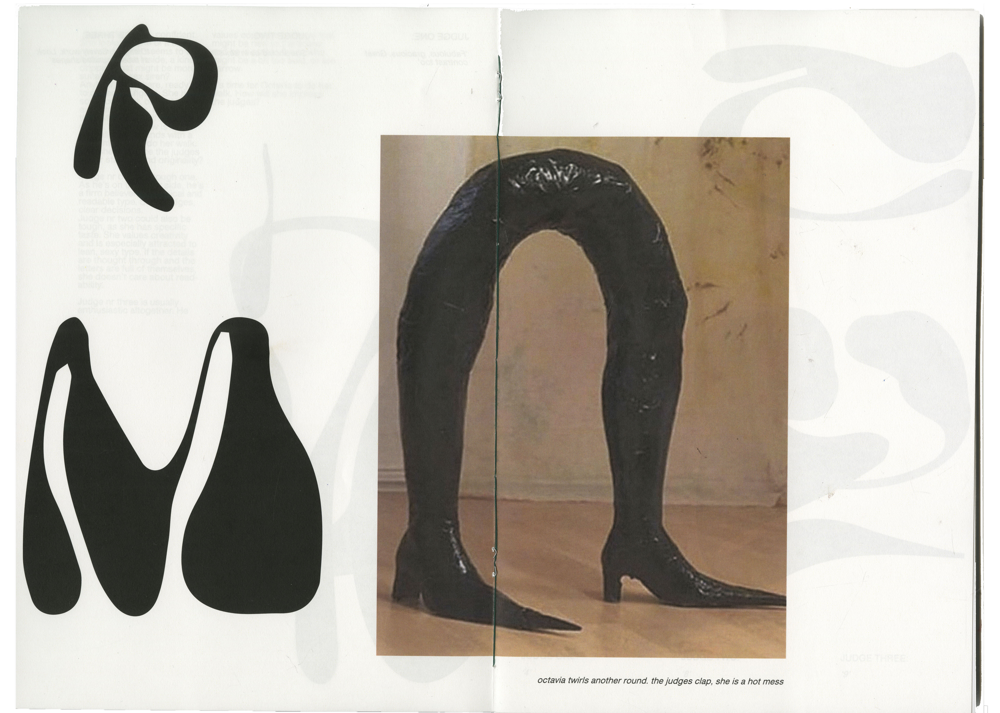

Brechje Krah - 1993 - 2019 - Royal Academy of Art - Amsterdam
MAKES + DOES - printed matter - performances - ceramics - multimedia installations - WRITES - short stories - CURATES - nice things
THE FLEA MARKET
Poster announcement for a romantic flea market that never happened.

THE VOGUE BALL
A fun and experimental approach to categorizing type according to different famous Vogue or drag characters, 'Paris is Burning' as a main source of inspiration. Spacing, boldness, expression, Kerning and originality are assessed by 3 fictional judges in a series of 10 publications, bound together into one.
THE COMMUNICATION CATALOG
Alongside the printed page, written language is represented in various forms. Public space is filled with messages of all kinds written by the individuals that inhabit it. Through these interventions of self-expression, different forms of written and oral language have been born that go unaccounted for in the history of communication.
Each of these methods has its own formal and conceptual qualities, as well as its own history and background. These tools represent an untold history of graphic design that has existed and developed alongside the popular communication tools of print publishing, radio, television and the internet.
THE FICTIONAL EVENT
This poster series of two, both physical and in augmented reality, came to exist as a fictional fusion between the Masters of LXRY and the Chinese social credit system.
THE WAITING GAME
For the duration of one month, Bregje Hofstede did not reach for her phone in her pocket while waiting on something. This way she learned that we have lost our ability to wait, but we haven't passed it yet. On the contary; in a strange way we actually spend móre time waiting.
Text combined with visual essay from alienating photographs.
THE FRAGMENTED LANGUAGE
This Lexicon archives different art -and design books: #If only you could see what I've Seen with Your Eyes(2017), #Cubaanse Affiches (1971), #Mirrors for Princess (2015), #The soul in Limbo (2015), #Trust in Fiction (2016), #Artistic Research Grey Magazine #2 (2014), #Extended Operations (2016) and #Tableaux Fluo (2016). Project in collaboration with Amanda Verberne, Arnaud Schmitt, Maarten Meij and Nicoletta Radiche.
THE LUNCH LECTURE
2 Different lecture posters made in one morning. Lecture by Papergod Trudy Dorrepaal.
THE MINDFULNESS UTOPIA
A research project on the validity of mindfulness as a cure-it-all. Do people’s expectation of the practice exceed the reality that they might be avoiding to face? Based on interviews with scientist Miguel Farias (found) and psychologist Josine van Vegchel (performed). Publication + short film.
THE KNEADING AND SPINNING
An ongoing project of purposeful and random shapes, made from white clay. Imitations of shapeless curiosities, (the wind) and attemps for everyday utensils (a soy sauce container)
THE NIETZSCHE FUSION
The Birth of the Tragedy is a chaotic piece of work, understated, especially for those who are just getting started on philosophy. This book tries in a way to mock Nietzsches way of thinking; it being anti-scientific, pro-rethoric and very pro-pessimism. This book, combined with The Seven Deadly Sins (in webdesign) catalogues the aforementioned, in both a literal metaphorical way. Collaborative project with Ruben Visser.
THE CERAMIC DINNER
One Irish, Two French. One Dutch, One Moroccan, One Italian. Mahalabya (مهلبية), hummus, tabouleh. White-but-colored dining performance curated with self made ceramics.
THE FEMALE BODY
Work in progress. An exploration of the female body as a painting tool. The root of the idea stems from John Berger's Ways of Seeing, that discusses (among other things) the depiction and perception of women throughout the centuries, and their role as tools for desire. Subsequently, a female body paints another female body.